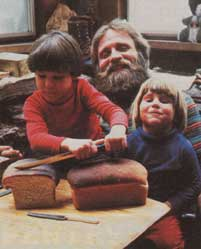
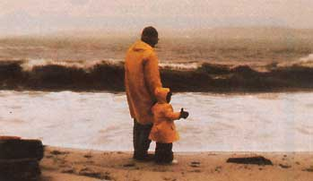
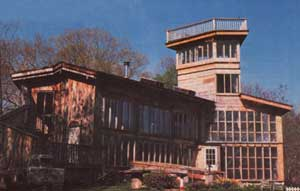

It's a blustery, uncommonly cold spring day here on Long Island, Maine . . . and I've just finished watering my flats of seedlings, hoping the timid young plants will discover that it really is spring and time to grow. I can see my husband, Bob, out front chopping wood . . . once again for "the last time this year"! And-while the children are napping upstairs, and fresh whole wheat loaves are rising in the kitchen-I have a quiet moment to sit back in the sunny warmth of our passive solar home and reflect on the many events that, like a series of sometimes faltering footsteps, brought us to live on this rugged island.
Who'd have thought, back in 1966-when Bob's parents first gave us these three oceanfront acres as a wedding gift-that one day we'd actually quit our city ways (I was a highly paid computer consultant, and Bob was teaching part time while finishing up his master's degree in economics) to become homesteaders? But, amazingly enough, we did!
The decision to change our lifestyle didn't just pop into our heads overnight, though . . . far from it! In fact, when we were newlyweds, Bob and I were much too career-minded to even think about leaving the city. So, at first, we used the island only for occasional weekend camping trips. Then, gradually-as we grew to enjoy our getaway excursions more and more-we allowed ourselves to consider the prospect of living in tune with nature all of the time . . . but our enthusiasm was tempered by the fact that we still loved our work. To resolve this growing quandary, we compromised and bought a house on the outskirts of the city in which we were employed. The move allowed us to try our hands at homesteading (part time), and still be able to commute to our jobs.
However-once we were actually living in the country-Bob and I quickly developed a love for the rural luxuries that were so new to us (such as taking peaceful walks in the woods . . . growing our own vegetables for the first time . . . and learning about the owls, beavers, and the like that inhabited our surroundings). And, one at a time, we began to shed our city ways. We traded our Jaguar XKE in on a Volkswagen bug, replaced our meat-rich diet with a semivegetarian one, and learned to heat with wood instead of oil. As we came to accept these changes, our nine-to-five routine slowly lost its appeal . . . while our land in Maine became increasingly attractive. Suddenly it seemed more than just a mere retreat . . . it had become a potential homeplace where we might settle (full time) and begin to raise a family.
After a lot of reading and discussing (not to mention hemming and hawing!), we finally quit our jobs, packed our belongings, and headed for the Pine Tree State. Once there, because we didn't have a permanent shelter on our land, we purchased a two-family house in the small harbor town from which the ferry departed to "our" island.
During the first winter, we designed our dream home and ordered the lumber we'd need to build it. Bob worked full time as an energy consultant, and I stayed home to nurse our newborn child, Seth. And, to bring in additional income, we divided the rickety dwelling we were living in-as well as another old duplex we had bought nearby-into comfortable, quaint rental apartments.
Then, in June (taking along a tent, garden supplies, and a new beehive), the three of us moved over to Long Island, ready to begin work on the house. Bob was sure he could continue his job on the mainland and still have plenty of time left over-primarily during the weekends-to put up a winter-resistant structure by fall.
However, by midsummer we hadn't even gotten a pump hooked up to the well we'd had drilled . . . let alone begun work on the ac tual house! So, after a long and somewhat disheartening talk, my husband and I decided that the best thing to do was just relax, enjoy the rest of the "tourist" season on the island with Seth, and then-come fall-move back to the mainland for another winter. That way, by the following summer (when Bob would be ready to quit his job anyway and devote full attention to construction), we'd be all set to get an early start, and could-with luck-be settled into our farmstead before the first nip of fall hit the air!
Building a house under ordinary circumstances is difficult enough, I'm sure, but when you add an "island flavor" to the project, it can turn into a real ordeal! For instance, when that second spring rolled around, we found ourselves faced with the monumental problem of having to somehow transport 5,000 board feet of lumber . . . 62 panes of Thermopane glass . . . and countless batts of insulation (not to mention all the other building materials we needed) first across the channel to Long Island, and then over the island to our property!
It ended up taking us most of May to make the necessary arrangements to coordinate suppliers, truckers, and ferry services in order to make this feat possible. But-at the last minute-all our plans disintegrated, because the day before the trucks (loaded with the components of our future home) were scheduled to board the boat . . . the city condemned the ferry dock!
Well, our frantic searching finally turned up a contractor with a barge, and he was willing to float our supplies, but not the trucks that had hauled them, across the water. Then, when everything had been unloaded from the barge, it took us six whole days, with a jeep and trailer, to haul all the material to our three acres . . . (which, of course, was located at the far end of the island from the boat landing)!
Once our building materials were on hand (at last!), we worked furiously all summer, and most of the fall, in an effort to complete some sort of an enclosed shelter by winter. But, as Bob said, his scheduling "just didn't take into consideration how many trips we'd make up and down the ladder!" . . . and, again, we ran out of time. It was a gloomy day in late autumn when we packed up the tent and headed back to town. Surely, we thought, this will be our final winter as city folk!
Now, five years and another son-Zeke, who was born in '78! Later, we're all happily ensconced in a cozy energy-efficient home on the island. And every day, as we learn to live more self-reliant lives, it becomes increasingly difficult for us to imagine that we were ever really dependent on a fancy car . . . or a meat-heavy diet . . . or an oil furnace!
To be sure, living here year round isn't always easy. Maine winters can be pretty brutal, and keeping warm is often one of our main concerns. But we manage to stay quite comfortable by relying primarily on our home's solar gain, backed up by a woodstove (which we use for cooking as well) stoked with fuel cut from our land. We've also opted to do without electricity and many other modern (and expensive) conveniences, and are having a great time rediscovering many tricks and gadgets from the past. Laundry is still a problem (and anyone going to town is required to take along the big green bag stuffed with dirty clothes), but we'll solve that one too, before long!
We grow most of our own food (using a greenhouse in the winter). And, during the blustery, bone-chilling months, we usually have a ready supply of still-crunchy carrots, potatoes, and onions, plus dried beans and canned tomatoes (not to mention all the foraged mussels and crabs we want, or the endless supply of fresh fish we can swap our duck eggs and honey for). So we're never hurting for ingredients to simmer into a hearty stew or soup to warm us!
Early February finds me in the greenhouse, tending to my herbs and removing the hay mulch from the fall-planted greens. These are pleasant chores, because I know that, as early as March, my family and I will be enjoying spinach quiches . . . crispy green salads . . . and duck egg omelets, garnished with fresh parsley and chives!
Once May comes, I give up my greenhouse . . . which isn't too painful, since by that time (and on through fall) our land nearly explodes with wonderful things to eat! Besides growing almost every cold-tolerant vegetable imaginable, we're cultivating a small mixedfruit orchard. So, all in all, we have quite a potpourri of culinary delights to tempt our appetites . . . 12 months of the year!
Since the island's school, post office, ferryboat landing, and store are all at least two miles from where we live (and because we like to crank up the old VW as little as possible!), we've learned to rely on bicycles for most of our transportation. Seth thinks nothing of riding his to school in the spring and fall . . . and Zeke is currently "in training" on his tricycle . . . but, come winter, Bob is the only one of us daring enough to straddle a two-wheeler. And he's quite a sight, too, as he pedals off in the snow all bundled from head to toe with only his eyes and his nose peeking through!
Our bikes have also provided us with an unobtrusive way to glide out into the community and get to know some of the island's other year-round residents. Of course not all 120 of them go to the "extremes" that we do (cutting firewood . . . raising organic vegetables . . . or riding bikes in the snow!), but most are kindred spirits who believe-as we do-in the importance of family. Education is strongly supported here, and cooperative buying is a respected part of the island lifestyle.
And now-standing in my toasty kitchen and spreading sweet butter and honey over warm slices of freshly baked bread (to provide an afternoon snack for a weary woodcutter and two sleepy young'uns)-I can't help but marvel at how fulfilling our lives on this rugged isle have been. Oh, we may not be providing everything that we need just yet . . . but we're a heck of a lot more self-sufficient (and happy!) than we ever imagined we could be when my husband and I were still punching time clocks in the city. And all it took to get us from there to here was a wonderful wedding gift . . . one that-at the time-we thought we'd hardly use!
|
 TOP TO BOTTOM: Living here has given us the chance to explore our ever-changing surroundings... to enjoy simple family pleasures... and to build our own home. |
 |
 |